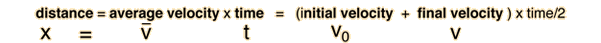

Velocity and Acceleration
Description of Motion in One Dimension
Motion is described in terms of displacement (x), time (t), velocity (v), and acceleration (a). Velocity is the rate of change of displacement and the acceleration is the rate of change of velocity. The average velocity and average acceleration are defined by the relationships:

A bar above any quantity indicates that it is the average value of that quantity. If the acceleration is constant, then equations 1,2 and 3 represent a complete description of the motion. Equation 4 is obtained by a combination of the others. Click on any of the equations for an example.
Distance, Average Velocity and Time
The case of motion in one dimension (one direction) is a good starting point for the description of motion. Perhaps the most intuitive relationship is that average velocity is equal to distance divided by time:
Distance, Average Velocity and Time
The case of motion in one dimension (one direction) is a good starting point for the description of motion. A basic type of calculation may be explored here by substituting numbers and then clicking on the bold text of the quantity you wish to calculate. Make only one substitution at a time and click the desired quantity -- then you can repeat with other substitutions.

Forms of Motion Equations

Forms of Motion Equations
Motion Example
In this example, the items labeled on the diagram are considered primary: if one of them is changed, the others remain the same. The data in the boxes may be changed, and the calculation will be done when you click outside the box, subject to the constraints described. Changing average velocity, acceleration or time will force a change in at least one of the original quantities. In this version, the final velocity is allowed to change.
Linear Motion Explorer
These motion equations apply only in the case of constant acceleration. It is assumed that x=0 at t=0 and that the motion is being examined at time t. After you have edited any box of motion data, click on the text or symbol for the quantity you wish to calculate. If it does not behave the way you expect, see the comments on the calculation.
Comments on Motion Explorer
In the example motion calculation, some assumptions are made about the calculation order. It is intended to be an exploration exercise, and may not conveniently solve all problems. The motion equations represent a complete set of equations for constant acceleration motion, but in certain types of problems, intermediate results must be calculated before proceeding to the final calculation. In the example calculation, you may have to do intermediate calculations, e.g., to establish the final velocity, in order to set up the problem you wish to solve, just as if you were working the problem with calculator and paper.
In the example calculation, the time, initial velocity, and displacement were considered given (primary) unless they were being calculated . For example,if x is being calculated, then v is assumed given, so it must be calculated first if you want to specify a. After making substitutions, not all values are updated, so to be sure a specific parameter has been updated, click on the text or symbol associated with that parameter.